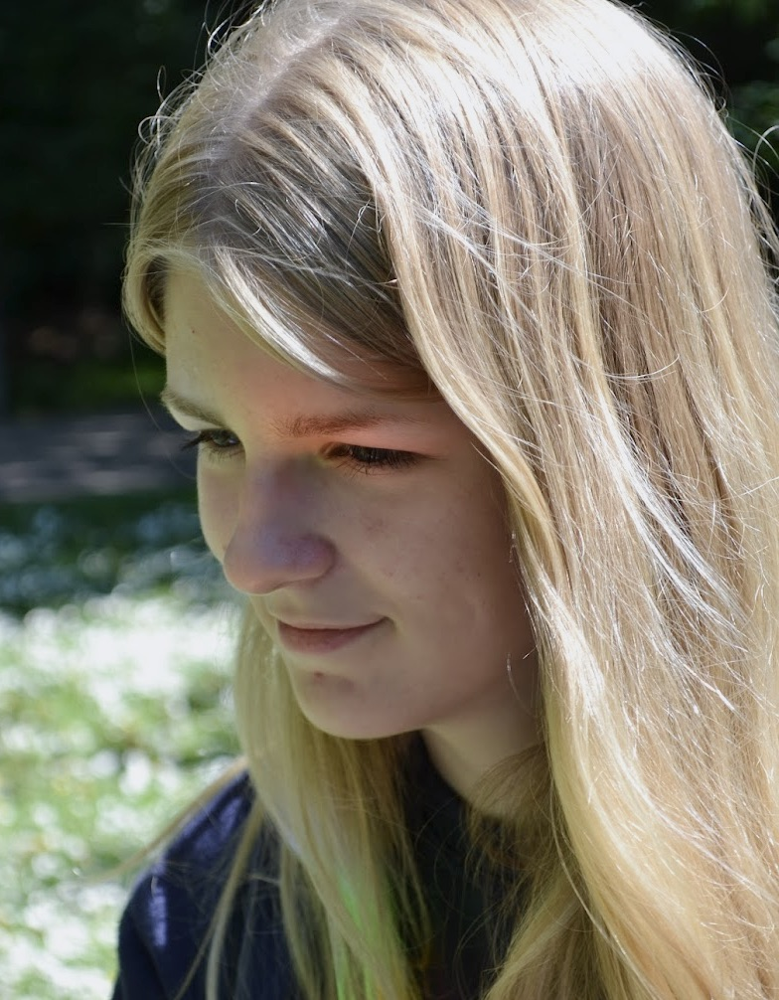

Amanda Walles
aspiring front-end developer

Om mig
Jag heter Amanda och är en frontend-student i Stockholm med en bakgrund inom datorspelsutveckling. För mig är frontend den perfekta kombinationen av kreativitet och logik - en plats där jag får designa, koda och lösa problem samtidigt.
Jag tycker om att se mönster, skapa struktur och bygga lösningar som både är funktionella och vackra. Det är just den blandningen av det praktiska och estetiska som driver mig framåt som utvecklare.
När jag inte kodar hittar du mig ofta med mina tre råttor, i jakt på nästa gröna växt till hemmet eller mitt i ett brädspelsparti. Jag växte upp i Malmö men har rotat mig i Stockholm, där jag fortsätter min resa mot att bli frontend-utvecklare med känsla för detalj och användarupplevelse.
Utbildning
Frontend-utveckling - Medieinstitutet, Stockholm (pågående)
- Fokus på HTML, CSS/SCSS, JavaScript, moderna ramverk och UX/UI.
- Projektbaserat lärande med praktiska case inom webb- och frontend-utveckling.
Data- och systemvetenskap, inriktning datorspelsutveckling - Stockholms universitet, Stockholm (2022 - 2025)
- Kurser inom programmering, speldesign och systemtänkande.
- Lärde mig struktur, logik och problemlösning som jag nu applicerar i webbutveckling.
Arbetslivserfarenhet
Säljare - Kjell & Co (2021 - pågående)
- Hjälper kunder att lösa tekniska problem och hitta rätt produkter.
- Ger rådgivning och rekommendationer utifrån kundens behov.
Driftledare - Max Burgers (2020 - 2021)
- Ansvarade för bemanning, planering och den dagliga driften i restaurangen.
- Ledde teamet i högt tempo och säkerställde god service.
- Arbetsuppgifter inkluderade även kassahantering, beställningar och att stå i köket.
Projekt
Projekt: One-pager med hem-, om- & kontaktsida
Syfte: Repetition och fördjupning av HTML, CSS och layouttekniker
I det här projektet skulle vi efterlikna en färdig design till punkt och pricka, vilket gav möjlighet att träna på HTML, CSS och layout med Grid och Flexbox. Jag valde att göra "Om"-sidan med CSS Grid för att presentera fyra personer i ett 2x2-grid, och mindre komponenter stylade jag med hjälp av Flexbox för att få enkel centrering och kunna hantera avstånd.
Jag använde mig av SCSS i det här projektet vilket gav bättre struktur och återanvändbarhet. Projektet lärde mig vikten av responsivitet, struktur och konsekvent styling, samt hur man praktiskt kan använda Grid och Flexbox tillsammans.